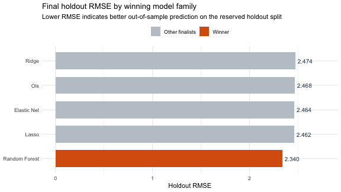
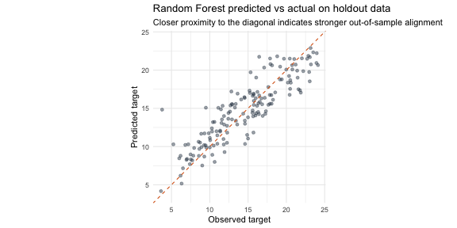
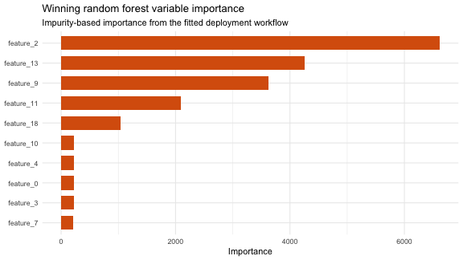

Predicting the Blind Test
End-to-end methodology and model selection
Goal: build a regression workflow from 800 labeled rows and generate 200 blind-test predictions in the required target_pred format.
Challenge Objective
The challenge required five concrete tasks:
- Validate whether preprocessing was needed and justify the decision.
- Evaluate whether feature selection was necessary and justify the decision.
- Train one or more regression models on the labeled dataset.
- Use robust evaluation procedures and explicitly guard against overfitting.
- Export 200 predictions for the blind test as a one-column CSV.
Analytical stance
- Treat the notebook as the single source of truth.
- Keep the workflow auditable from raw CSVs to final predictions.
- Prioritize generalization over in-sample fit because the target contains noise.
Methodology Backbone
CRISP-DM guided the full workflow
- Business understanding
- Data understanding
- Data preparation
- Modeling
- Evaluation
- Deployment
Why this structure mattered
- It kept the process sequential and easy to defend.
- It separated exploration from model selection.
- It preserved one final handoff from the chosen workflow into deployment.
Outcome
- The local files matched the brief exactly.
- Both datasets were complete and usable without repair.
Data Quality Findings
Main conclusion
The delivered files were unusually clean, so the preparation stage could remain simple and transparent.
What the notebook confirmed
0 training rows with missing values0 blind-test rows with missing values0 duplicated training rows0 duplicated blind-test rows
Modeling implication
- No imputation was needed.
- No rows had to be discarded.
- No manual feature removal was justified at the preparation stage.
Exploratory Signal Check
Target distribution
- The target had enough spread to support regression.
- The notebook checked shape, center, dispersion, and potential outliers.
- This matters because skewness and heavy tails can affect residual behavior later.
Predictor review
- The project profiled predictor spread and outlier behavior.
- It also checked pairwise correlations to understand multicollinearity risk.
Relationship Structure
What this exploration was used for
- Rank predictors by marginal correlation with the target
- Visually inspect the strongest individual relationships
- Inspect dependence patterns among predictors before fitting linear models
Key methodological takeaway
The notebook did not use this section to hand-pick variables manually. It used it to understand the data and then let recipes and model families handle preprocessing consistently.
Correlation Map
Why this mattered
- OLS and penalized linear models can react differently when predictors overlap.
- A global correlation view helps anticipate multicollinearity and redundancy.
- It also motivates why regularized models were worth comparing against plain OLS.
Decision
- Keep all predictors initially
- Let recipes remove only zero-variance columns
- Test PCA as an unsupervised dimensionality-reduction alternative
Data Preparation Logic
The preparation phase followed four simple rules
- Keep all original predictors.
- Preserve the numeric representation recovered from the raw files.
- Keep all supervised training rows because there were no incomplete observations.
- Keep the blind test dataset intact for final scoring.
Why this is defensible
- The data did not require cleaning-heavy preprocessing.
- The notebook avoided arbitrary manual feature dropping.
- Preparation stayed minimal so model comparison would remain fair and reproducible.
Modeling Design
Evaluation backbone
80/20 train-test split5-fold cross-validation on the training split- Stratification on
target
- Common metric set:
RMSE, MAE, R²
Model families compared
- OLS
- Ridge
- Lasso
- Elastic Net
- Random Forest
Shared principle
The holdout set was not used to choose the family winner. Cross-validation decided the winner first, and the holdout was used only once at the end.
Preprocessing by Model Family
Recipes tested
- Base recipe: zero-variance filtering only
- Normalized recipe: scaling for magnitude-sensitive models
- PCA recipe: normalization plus PCA with Kaiser criterion
Family-specific strategy
- OLS: raw and PCA variants
- Ridge: normalized and PCA variants
- Lasso: normalized and PCA variants
- Elastic Net: normalized and PCA variants
- Random Forest: minimal preprocessing plus hyperparameter tuning
Rationale
Each family competed under transformations that make methodological sense for that estimator instead of forcing one preprocessing path on every model.
Cross-Validated Model Ranking

Final family ranking by cross-validated RMSE
| Random Forest |
minimal_preprocessing |
2.615919 |
| Lasso |
normalized |
2.840765 |
| Elastic Net |
normalized |
2.842309 |
| OLS |
raw |
2.845045 |
| Ridge |
normalized |
2.848861 |
Winning Model
Selected workflow
- Winner: Random Forest
- Variant:
minimal_preprocessing
Why it won
- It achieved the lowest cross-validated RMSE.
- It outperformed every linear and regularized alternative.
- The margin over the runner-up lasso was meaningful enough to justify the final selection.
Interpretation
The data likely contains nonlinear structure or interactions that the linear families could not capture as effectively.
Holdout Validation
Final metrics on untouched data
| RMSE |
2.523354 |
| MAE |
1.975047 |
| R² |
0.7449495 |
Why this slide matters
- The model was not chosen because of holdout performance.
- The holdout was used only after cross-validation had already selected the family winner.
- This keeps the evaluation story statistically cleaner and easier to defend.
Predicted vs Actual on Holdout

Reading the chart
- Points close to the diagonal indicate better agreement.
- The cloud follows the diagonal reasonably well, which supports the holdout metrics.
- Errors exist, but the fit is consistent with a model that generalizes better than the linear baselines.
Error Profile of the Winner
Absolute error summary
- Mean absolute error:
1.975047
- Median absolute error:
1.670238
- Maximum absolute error:
8.361734
Interpretation
- Most errors remain concentrated in a moderate range.
- The maximum error shows that the model still misses some observations by a larger margin.
- That pattern is normal in noisy regression problems and does not invalidate the overall selection.
Variable Importance

How to interpret this slide
- These are impurity-based importance scores from the final fitted forest.
- They are useful for interpretation, not for model selection.
- The notebook uses them to explain which predictors contributed most inside the nonlinear ensemble.
Deployment Output
Final operational step
- Score the
200 blind-test rows with the selected workflow
- Rename the prediction column to
target_pred
- Export the submission file to:
output/blind_test_predictions.csv
Deliverable status
- File exists
- One-column format preserved
- Ready for submission
Final Takeaways
What this project demonstrates
- A clean and auditable R workflow from raw files to final predictions
- Proper separation between model selection and final validation
- A justified comparison between interpretable linear baselines and a nonlinear ensemble
Bottom line
Random Forest was the strongest predictive choice for this dataset.
The final deployment followed a defensible validation process instead of a holdout-driven shortcut.